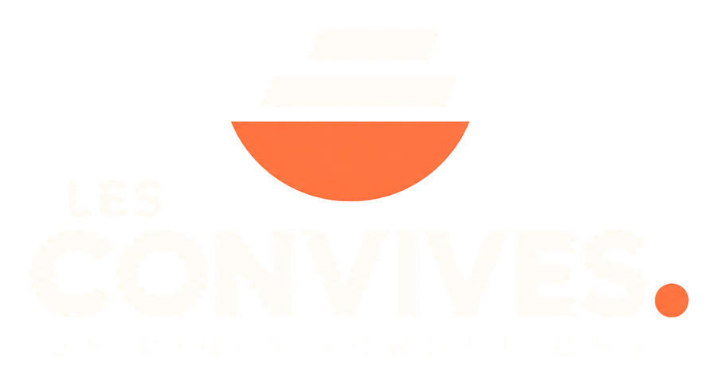

Le groupe
Fondations produit et diffuse des programmes au long cours, tournés avec exigence, pour un public qui préfère la conversation au bruit.
Nous sommes nés dans le Grand Est et nous tournons là où se trouvent les histoires : à Nancy, à Metz, à Luxembourg, à Paris, et ailleurs dès que le sujet le demande.
Deux programmes ouvrent la première saison. Chacun a sa forme, son rythme et sa signature, avec la même exigence d'image, de son et de ton.
Programme I
Dîner filmé

Une table, quelques invités, un repas qui dure.
Dans la tradition des grands dîners filmés, on laisse la conversation aller là où elle veut. Chaque dîner choisit sa ville et sa maison, ses convives et son sujet.
- Format
- Dîner filmé, conversation libre
- Lieux
- Une maison différente à chaque dîner
- Diffusion
- YouTube, épisode intégral et formats courts
- Lancement
- [MOIS 2027]
Programme II
Magazine de nuit

Une nuit, une ville, ceux qui la vivent.
Dans l'esprit des grands magazines nocturnes, on suit une ville de la tombée du jour au premier café : ses adresses, ses figures, ce qui ne se voit qu'après minuit.
- Format
- Magazine de nuit
- Lieux
- Nancy, Metz, Luxembourg, Paris
- Diffusion
- YouTube, épisode intégral et formats courts
- Lancement
- [MOIS 2027]
Tournages
Un groupe ancré entre la Lorraine, le Luxembourg et Paris, qui se déplace avec ses sujets.
- NancyMeurthe-et-Moselle
- MetzMoselle
- LuxembourgGrand-Duché
- ParisÎle-de-France
- et ailleursSelon le sujet
Ligne éditoriale
Le temps long.
Des formats qui laissent parler. Pas de montage haché, pas de phrase sortie de son contexte.
L'élégance.
Une image soignée, une tenue, un ton. Le sérieux n'empêche ni l'humour ni la curiosité.
L'indépendance.
Fondations choisit ses invités et ses sujets. Les partenaires accompagnent, ils ne dictent pas.
Partenaires fondateurs
Accompagner la première saison.
Nous réunissons un cercle restreint de partenaires fondateurs. Chacun est associé à un programme et présent dès le premier épisode, de façon naturelle et durable.
- I.
Partenaire de programme
Votre marque associée aux Convives ou à Nocturne sur toute la saison.
- II.
Partenaire d'épisode
Un épisode, une ville ou une séquence construite avec vous.
- III.
Partenaire technique
Matériel, lieux, mobilité ou tenues, mis à disposition des tournages.
Contact